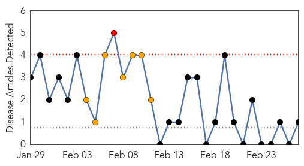
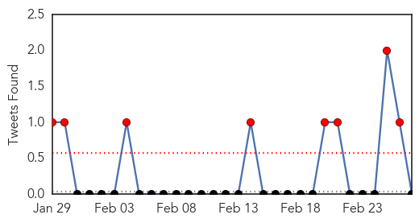

Pertussis
30-Day Web Trend
1 alerts, 7 warnings

30-Day Twitter Trend
0 alerts, 0 warnings

Article Locations

Article Confidences

Top Articles:
Top Tweets:
-
No tweets found for Feb 27, 2015
MERS
30-Day Web Trend
18 alerts, 2 warnings
30-Day Twitter Trend
8 alerts, 0 warnings

Article Locations
Article Confidences

Top Articles:
Top Tweets:
-
No tweets found for Feb 27, 2015